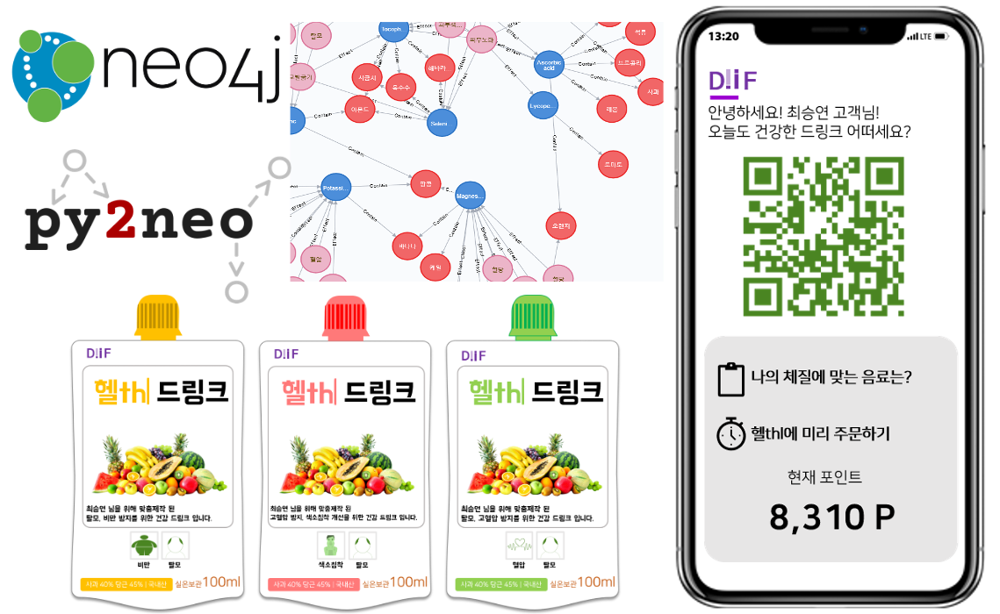
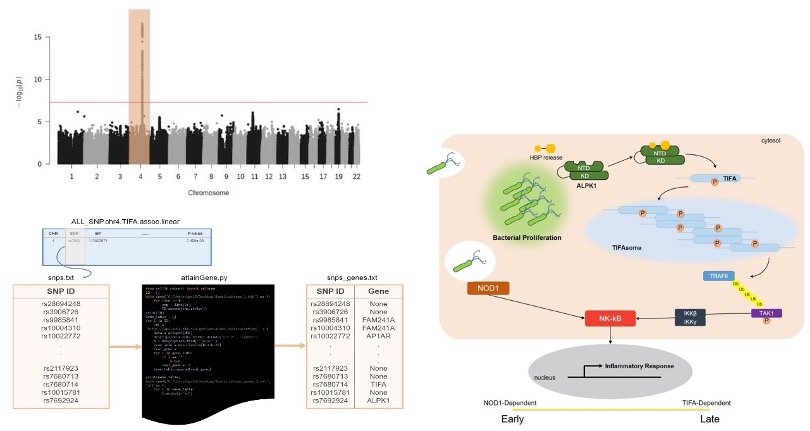
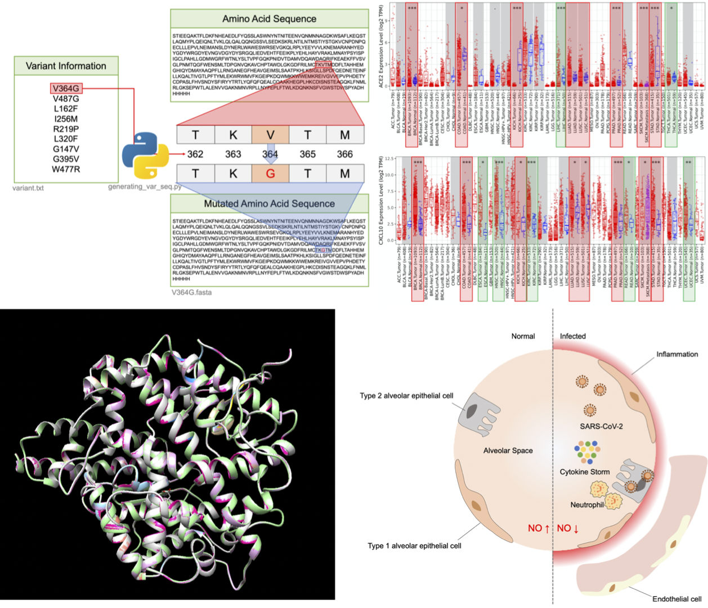

Research Interests
Next Generation Sequencing(NGS)
Cancer Genomics
Unraveling the biological mechanism of genes
Genomic Data Analysis via Machine Learning
Epigenomics
Next Generation Sequencing(NGS)
Cancer Genomics
Unraveling the biological mechanism of genes
Genomic Data Analysis via Machine Learning
Epigenomics
I am a diligent and honest person who is looking for graduate school for my advanced study. My major is the School of systems Biomedical Science (Bioinformatics & Bioengineering). During the undergraduate course, I got interested in next-generation sequencing (NGS), Cancer genomics, Unraveling the biological mechanism of genes, Genomic data analysis via machine learning, and Epigenomics.
My long-term goal is to be an expert in bioinformatics who study disease or cancer-specific gene discovery. Through the graduate program, I am expected to do up-to-date research to accomplish my goal.
Research Intern
Aug. 2019 - Present
Advisor : Professor Sangsoo Kim
Internship
Jul. 2019 - Aug. 2019
• Planned a personalized fruit and vegetable drink service referring to the personal genome data (prototype, via Neo4J)

Click the Image to Open a powerpoint about the project.
Tutor, Sep. 2019 - Dec. 2019, Subject: Distributed Big Data Computing

Soongsil University
During the course (Practice of Biostatistics, 2019)
@Soongsil University
Click the Image to Open a pdf file.
This study was conducted to identify eQTLs with 373 Europeans’ expression data of the genes encoding TIFA in Lymphoblastoid cell lines which were examined by the Geuvadis RNA-sequencing project. Overall analysis was operated with PLINK ver. 1.90. And Python programming and R were also used for the study.
During the course (Computational Molecular Biology and Lab., 2019)
@Soongsil University
Click the Image to Open a .ipynb
This project was conducted to find stronger drug by molecular dynamic(MD) simulation. In order to find a feasible drug, I developed a customized scoring function and found candidate ligands to be docked with a receptor using DUDE, pubchem, and ZINC database.
During the course (Undergraduate Thesis, 2020)
@Soongsil University
Click the Image to Open a pdf file.
This thesis is mainly about the susceptibility to Covid-19 of pan-cancer patients. With various information of mutation, biding affinity between human ACE2 and SARS-CoV-2's spike protein.
During the Undergraduate
Click the Image to Open my github repository.
To improve the python programming, I solved the problems on the rosalind(http://rosalind.info/problems/locations/). By solving the various problems, I was able to learn various applications of the python with a bioinformatics.
(Rank: 65/212, South Korea)